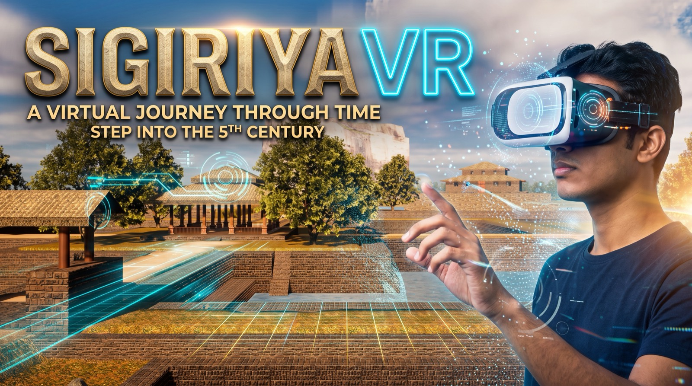

Sigiriya VR
Stepping across centuries into the sky fortress.
Rising 200 metres from the central plains of Sri Lanka, the ancient rock fortress of Sigiriya stands as an enduring marvel of royal ambition, hydraulic wonder and architectural genius.
Yet for generations its sheer cliffs, narrow walkways and steep rock-cut stairways have kept its wonders out of reach for many. Sigiriya VR bridges past and future by breathing digital life into this UNESCO World Heritage site, welcoming visitors of all ages and backgrounds into fifth-century Sri Lanka without physical boundaries.
- Walk among the legends
- Stroll through the lush royal water gardens, stand before the colossal stone Lion’s Paw, and gaze up at vibrant centuries-old frescoes, all recreated in lifelike detail.
- History brought to life
- Interactive storytelling and audio narration unveil the engineering and culture of King Kashyapa’s era along every pathway and terrace.
- Heritage without barriers
- Built to make cultural exploration genuinely inclusive, it opens the palace gates to children, curious learners, and people with mobility limitations — exploring the summit as if standing on the rock itself.
Developed by the Computational Intelligence and Robotics Research Lab at Sri Lanka Technology Campus.
It is not just a digital tour. It is a portal through time, where timeless ancient heritage meets tomorrow’s virtual universe.